Install 12 Pillars
A life OS for Claude Code and Codex: the 12-Pillar Flywheel, a raw/wiki memory, and folders designed around your life and businesses.

Fastest: one line (Mac / Linux)
Installs into Claude Code and/or Codex, whichever you have, and creates ~/my-life. Paste into Terminal:
curl -fsSL https://raw.githubusercontent.com/twiss-io/12-pillar-plugin/main/install.sh | bashClaude
Claude desktop app: opens a new Code session with an install request already typed. Press Enter, then allow the command when Claude asks.
Open in the Claude appClaude Code in a terminal: opens Claude Code with the install command already typed. Press Enter, then choose Install for you.
Open in Claude Code (terminal)The terminal button works once you've used Claude Code in a terminal at least once. If nothing opens, paste this into any Claude Code session instead:
/plugin install 12-pillars --marketplace twiss-io/12-pillar-pluginThe app and the terminal share the same plugins, so installing in one gives you both. Then type /12-pillars:setup in a personal folder.
Codex (CLI and app)
Codex app: opens a new Codex chat with an install request already typed. Press Enter, then approve the command when Codex asks.
Open in Codex app Open the plugin page in CodexThe second button only finds the plugin after it has been added once (by the first button or the line below); otherwise Codex opens its Plugins page.
Terminal:
Paste this into Terminal. It finds Codex, including the copy built into the ChatGPT app, so you don't need to install anything else:
curl -fsSL https://raw.githubusercontent.com/twiss-io/12-pillar-plugin/main/install.sh | bashAlready have the codex command? These two lines do the same:
codex plugin marketplace add twiss-io/12-pillar-plugincodex plugin add 12-pillars@12-pillars- Open Codex in a personal folder (for example
~/my-life). - Type
$12-pillars:setup. - When asked, review and trust the plugin's two hooks in
/hooks. They make filing more reliable.